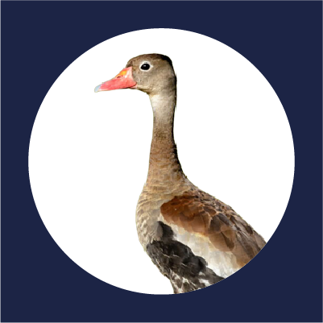
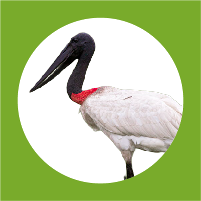
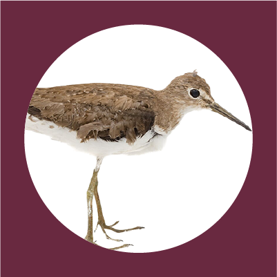
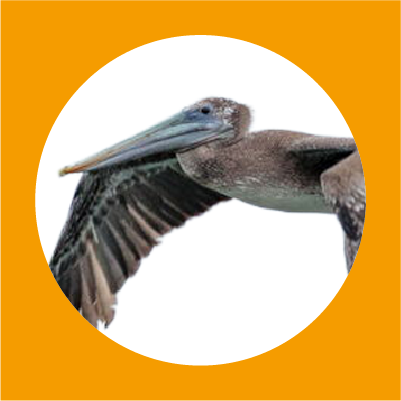
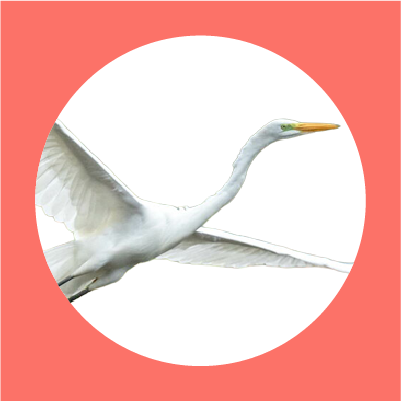

Especies de aves acuáticas registradas por grupo funcional
Filtra por:
Grupo funcional

Patos y afines

Vadeadoras

Limícolas

Marino costeras

Otros
Todos los estatus
EN
NT
VU
Todas las categorías IUCN
LC
NT
VU